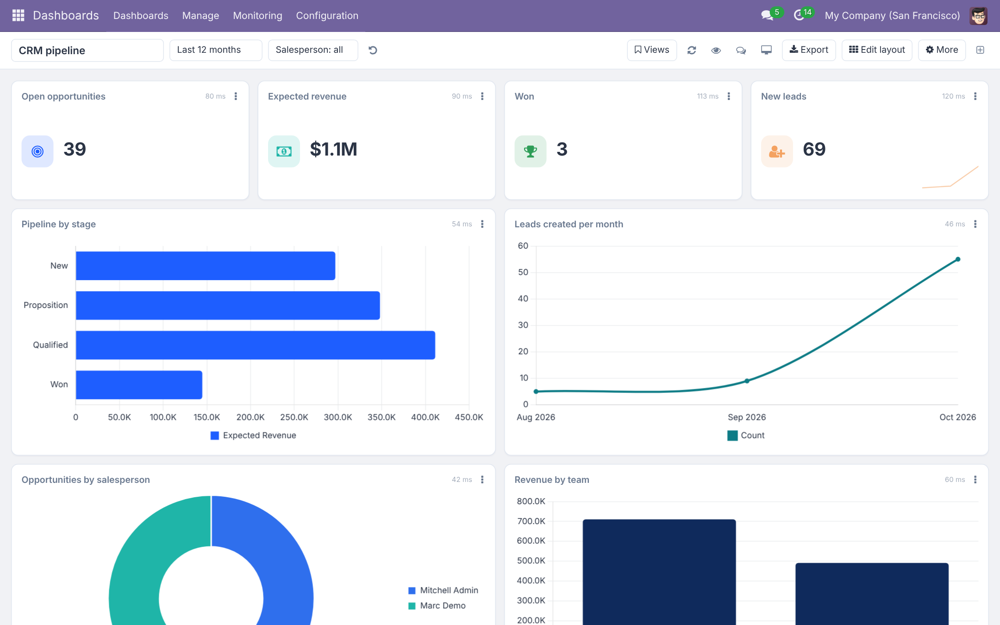
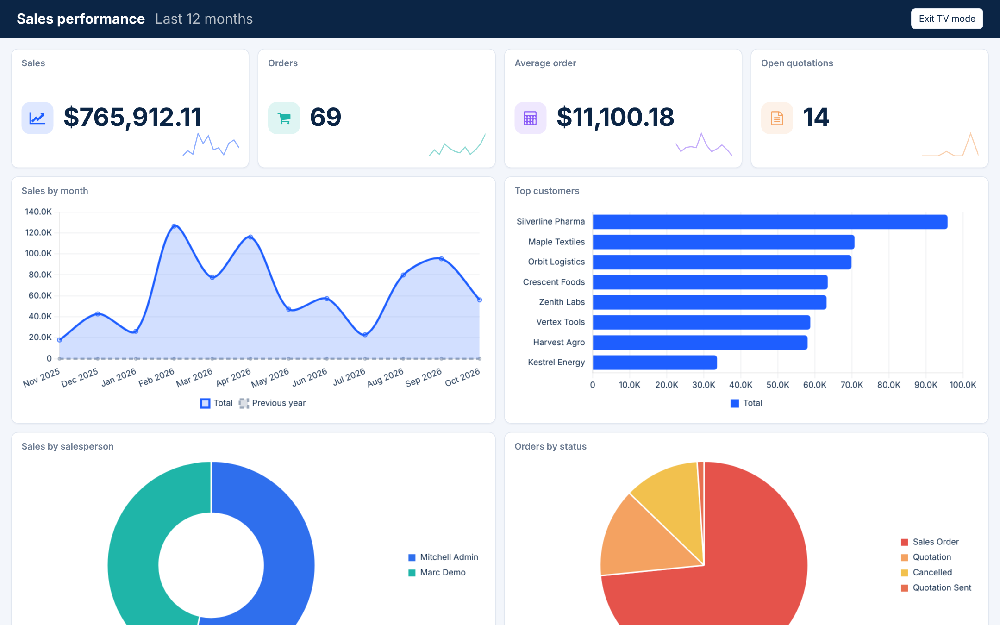
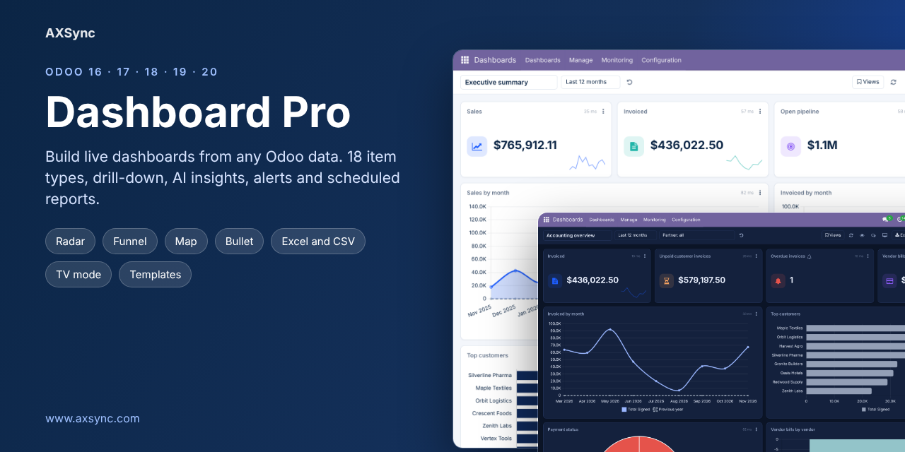
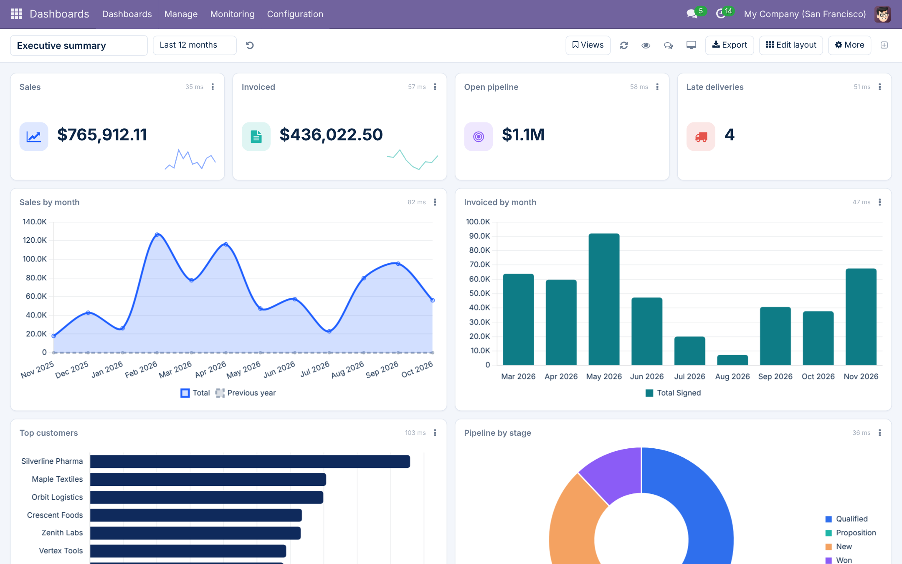
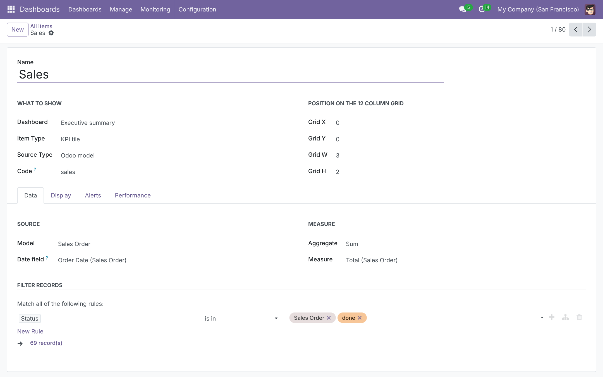
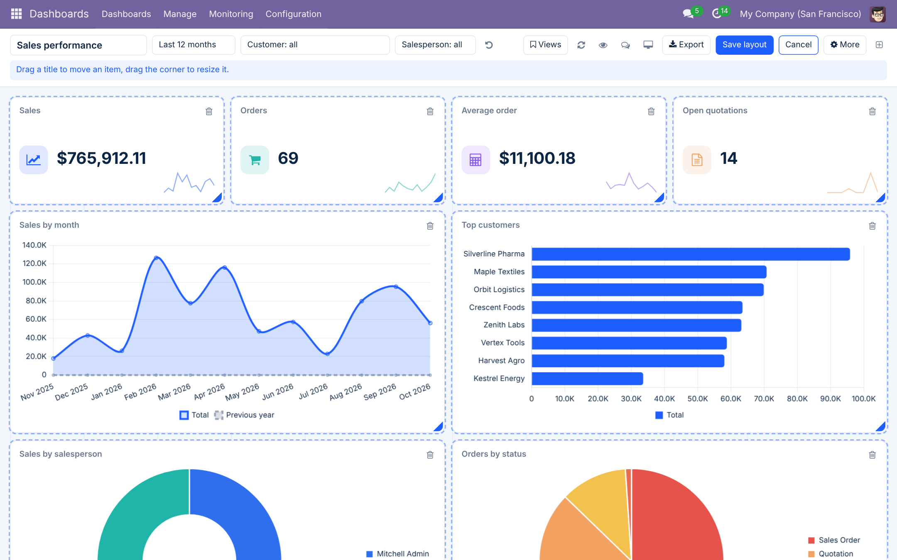
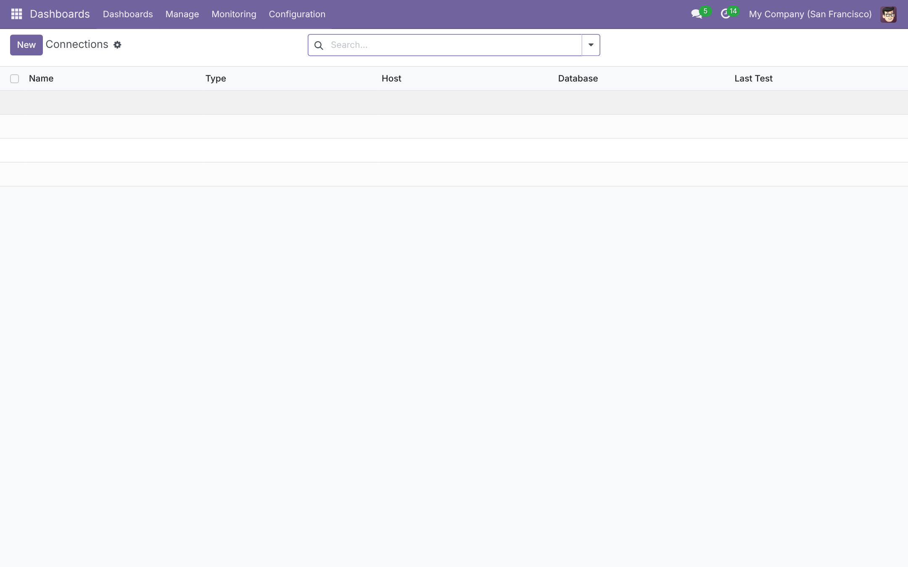

Screenshots
Taken from a running Odoo database with demo-style data.







Build live dashboards from any Odoo data. KPI tiles, 15 chart types, drill-down, templates, AI insights, alerts and email reports, with no code and no sudo.
Version 16.0.1.0.0 for Odoo 16
Most teams export Odoo data to spreadsheets to see their numbers. AXSync Dashboard Pro keeps the numbers inside Odoo, live, and respects who is allowed to see what.
Create a dashboard from a template or from scratch, add items from dropdowns, drag them into place and share. Every item loads on its own, runs with the viewer rights and links back to the records it counts.

Everything needed to build and run dashboards.
KPI tile, to-do list, list and 15 chart types. Every item has its own source, filters and drill-down.
Pick a model, measure, aggregate and grouping from dropdowns. Domains, date fields and formulas included.
Read-only SQL, external PostgreSQL or MySQL, JSON APIs, Excel and CSV files.
12 column grid, resize, copy and move items between dashboards, TV mode for wall screens.
24 date presets including financial year and next period, global filters, saved views, %UID and %MYCOMPANY tokens.
Click any bar, slice, point or tile to open the records behind it.
Eight templates for sales, CRM, inventory, accounting, purchase, HR, manufacturing and executive use.
Describe a dashboard in plain words, or ask for an explanation of the numbers. Bring your own provider.
KPI thresholds, anomaly checks, daily snapshots and scheduled email reports with Excel and PDF attached.
Every save creates a snapshot. Compare and restore.
Dashboards are shared only with chosen users or groups. Items run with the viewer rights. No sudo.
Give a dashboard its own Apps menu entry. Choose a theme, charts follow it.
Taken from a running Odoo database with demo-style data.


Plus KPI tiles, lists and to-do lists.

Install the module and start from a working dashboard.


Alerts, performance log, external connections and settings.




Odoo model items run with the rights of the user who opens them. No sudo anywhere in the data path.
A dashboard is visible only to its creator until it is shared with users or groups.
SQL is off by default, Manager only, single SELECT, read-only transaction, timeout and row limit.
| Group | Can do |
|---|---|
| Dashboard User | Open shared dashboards, filter, export. |
| Dashboard Builder | Create and edit own dashboards and items, use templates. |
| Dashboard Manager | Everything, including SQL items, connections, settings and logs. |
Install, open Dashboards in the Apps menu, then Configuration, Settings for the SQL switch, AI provider, slow item threshold and anomaly sensitivity. Full steps are in the module doc folder: installation, user manual, tutorial, chart guide, AI guide, SQL security guide, export and import guide, troubleshooting and developer guide.
Third party modules cannot be installed on Odoo Online. It works on Odoo.sh and on premise.
No. The module depends on base, web and mail only.
Not through Odoo model items, which use the viewer rights and record rules. SQL and external items bypass record rules by nature, so only Managers can create them and SQL is off by default.
Any OpenAI compatible endpoint and Anthropic. You enter your own key. AI is optional.
Country level.
Yes, with the pymysql package installed on the server. PostgreSQL needs nothing extra.
Items refresh on an interval you choose.
Email hunain@axsync.com or use the Support tab of this listing.
| Version | Notes |
|---|---|
| 16.0.1.0.0 | First release. 18 item types, six data sources, 24 date presets, templates, AI assistant, alerts, email reports, version history, per dashboard menu entries. |
AXSync, www.axsync.com, hunain@axsync.com. Bug fixes are free. Customizations are quoted separately.